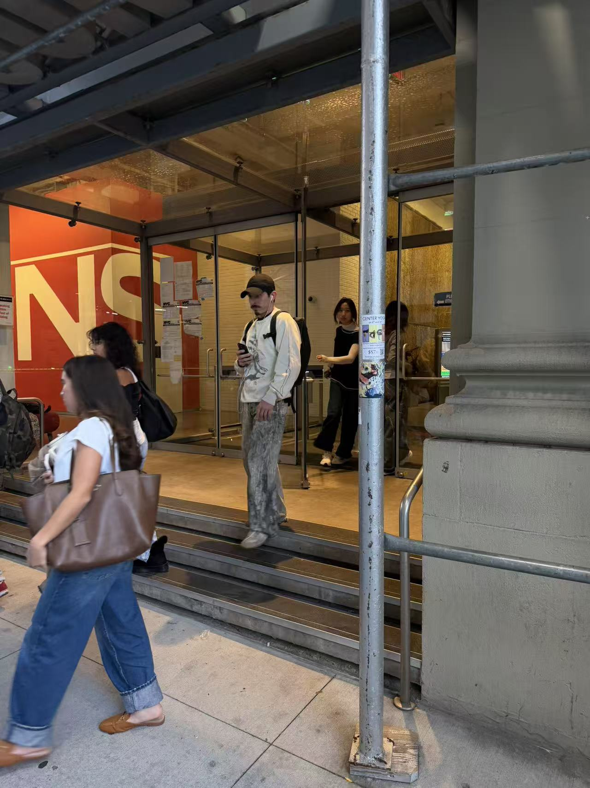

06. Arriving at School
I reached the teaching building. Metal scaffolding surrounds the entrance, and people move through the glass doors. A large red wall is visible inside, behind the gray poles and stone outside.

From the sidewalk into the building.